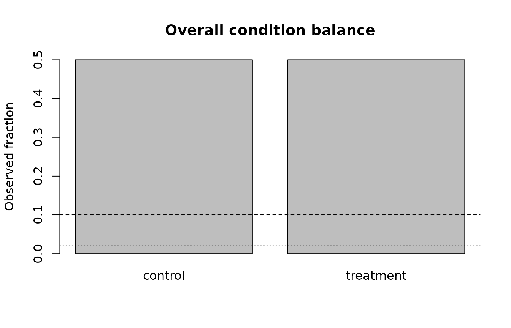

Specification Closure: Strict Readiness and Governed Validation
Source:vignettes/specification-closure.Rmd
specification-closure.RmdPurpose
This article closes the remaining Phase-0 validation requirements without expanding gp3bayes beyond its two approved families. The new checks are observable-data diagnostics. They do not establish posterior adequacy, choose a model automatically, or justify deleting observations.
Binary strict readiness
bin_sim <- simulate_hierarchical_binary_data(
n_participants = 20,
trials_per_participant = 10,
n_items = 10,
seed = 2026
)
bin_contract <- create_model_contract(
family = "binary",
outcome_col = "selected",
participant_col = "participant_id",
item_col = "item_id",
trial_col = "trial_id",
condition_col = "condition",
predictors = c("participant_covariate", "trial_covariate"),
interaction = c("condition", "participant_covariate"),
random_slope = FALSE
)
balance <- summarise_condition_balance(bin_sim$data, bin_contract)
balance
#>
#> Condition-balance audit
#> Status: pass
#> level n fraction
#> control 100 0.5
#> treatment 100 0.5
#> Condition balance is an observable design diagnostic. It does not by itself establish identifiability or adequacy.
variation <- summarise_binary_group_variation(
bin_sim$data,
bin_contract,
group = "participant"
)
variation
#>
#> Binary group-variation audit
#> Group: participant
#> Status: pass
#> Groups without outcome variation: 0
strict_binary <- audit_model_readiness_strict(
bin_sim$data,
bin_contract,
run_separation = FALSE
)
strict_binary
#>
#> Strict gp3bayes readiness audit
#> Family: binary
#> Status: ready
#> Ready: TRUE
#> Checks: 26 passed, 0 warnings, 0 failuresThe strict audit adds explicit overall condition imbalance,
participant outcome variation, identifier-like predictor review, and
fixed-effect rank checks. When detectseparation is
installed, the optional separation screen can also be integrated by
setting run_separation = TRUE.
plot(balance)
plot(strict_binary, type = "status")Identifier-like predictors are review signals
id_data <- bin_sim$data
id_data$row_id <- seq_len(nrow(id_data))
id_contract <- create_model_contract(
family = "binary",
outcome_col = "selected",
participant_col = "participant_id",
item_col = "item_id",
trial_col = "trial_id",
condition_col = "condition",
predictors = c("participant_covariate", "row_id")
)
identify_identifier_like_predictors(id_data, id_contract)
#>
#> Identifier-like predictor audit
#> Status: review
#> Flagged predictors: row_idThe heuristic never silently removes a declared predictor. A flag means that the analyst must verify whether the numeric column is substantively meaningful or is an identifier accidentally entered into the model matrix.
Duration extremes, impossible ranges, and censoring
dur_sim <- simulate_hierarchical_duration_data(
n_participants = 20,
trials_per_participant = 10,
n_items = 10,
outcome_unit = "milliseconds",
seed = 2027
)
dur_contract <- create_model_contract(
family = "duration",
outcome_col = "duration",
participant_col = "participant_id",
item_col = "item_id",
trial_col = "trial_id",
condition_col = "condition",
predictors = c("participant_covariate", "trial_covariate"),
interaction = c("condition", "participant_covariate"),
outcome_unit = "milliseconds"
)
extremes <- review_duration_extremes(dur_sim$data, dur_contract)
extremes
#>
#> Duration extreme-value review
#> Status: pass
#> Flagged rows: 0 of 200
#> Automatic deletion: FALSE
bounds <- audit_duration_boundaries(
dur_sim$data,
dur_contract,
allowed_range = c(50, 10000)
)
bounds
#>
#> Duration boundary audit
#> Status: pass
#> check_id category status
#> declared_duration_range duration_boundaries pass
#> uncensored_contract duration_boundaries pass
#> message n_affected
#> All durations fall inside the declared range. 0
#> No censoring-like column names were detected. 0
#> Automatic family switching: FALSE
strict_duration <- audit_model_readiness_strict(
dur_sim$data,
dur_contract,
duration_allowed_range = c(50, 10000),
run_separation = FALSE
)
strict_duration
#>
#> Strict gp3bayes readiness audit
#> Family: duration
#> Status: ready
#> Ready: TRUE
#> Checks: 29 passed, 0 warnings, 0 failuresExtreme values remain in the data. Censoring and impossible-range violations are contract failures for the positive uncensored lognormal workflow; they do not trigger an automatic switch to another likelihood.
Traceability
gp3bayes_specification_traceability()
#> requirement
#> 1 severe overall condition imbalance
#> 2 participant binary outcome variation
#> 3 identifier-like numeric predictors
#> 4 duration extreme-value review
#> 5 explicit censoring-indicator recognition
#> 6 declared duration range
#> 7 fixed-effects separation in strict readiness
#> 8 random-slope structural sensitivity
#> 9 participant/item deletion sensitivity
#> 10 contrast-coding sensitivity specification
#> 11 predictor-scaling sensitivity specification
#> 12 duration-unit sensitivity
#> 13 design-standardised binary probability contrast
#> 14 duration median ratio and upper predictive quantile
#> 15 transformation replay on new data
#> 16 binary detailed PPC calibration/group/cell checks
#> 17 duration detailed PPC tail/group/within-participant checks
#> 18 exact K-fold predictive validation adapter
#> implementation
#> 1 summarise_condition_balance(); audit_model_readiness_strict()
#> 2 summarise_binary_group_variation(); audit_model_readiness_strict()
#> 3 identify_identifier_like_predictors(); audit_model_readiness_strict()
#> 4 review_duration_extremes(); audit_model_readiness_strict()
#> 5 audit_duration_boundaries(); audit_model_readiness_strict()
#> 6 audit_duration_boundaries(); audit_model_readiness_strict()
#> 7 audit_model_readiness_strict(); detect_binary_separation()
#> 8 create_random_slope_sensitivity_plan(); run_random_slope_sensitivity()
#> 9 create_group_deletion_sensitivity_plan(); run_group_deletion_sensitivity()
#> 10 create_contrast_coding_sensitivity_specification(); audit_estimand_invariance()
#> 11 create_predictor_scaling_sensitivity_specification(); audit_estimand_invariance()
#> 12 create_duration_unit_sensitivity_specification(); audit_duration_unit_invariance()
#> 13 estimate_standardized_probability_contrast()
#> 14 estimate_standardized_duration_estimands()
#> 15 create_transformation_recipe(); apply_transformation_recipe(); validate_transformation_replay()
#> 16 check_binary_ppc_details()
#> 17 check_duration_ppc_details()
#> 18 compute_kfold_cv()
#> status automatic_decision
#> 1 implemented FALSE
#> 2 implemented FALSE
#> 3 implemented FALSE
#> 4 implemented FALSE
#> 5 implemented FALSE
#> 6 implemented FALSE
#> 7 implemented FALSE
#> 8 implemented FALSE
#> 9 implemented FALSE
#> 10 implemented FALSE
#> 11 implemented FALSE
#> 12 implemented FALSE
#> 13 implemented FALSE
#> 14 implemented FALSE
#> 15 implemented FALSE
#> 16 implemented FALSE
#> 17 implemented FALSE
#> 18 implemented FALSEThe table is intended to make specification closure auditable: every
remaining Phase-0 requirement has an explicit implementation point and
all automatic decision flags remain FALSE.